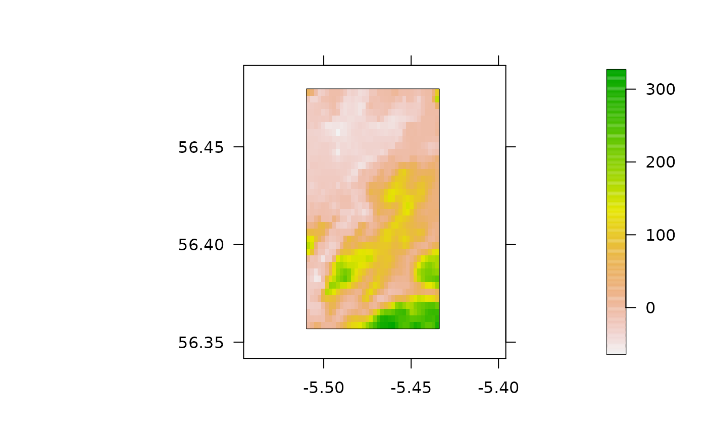
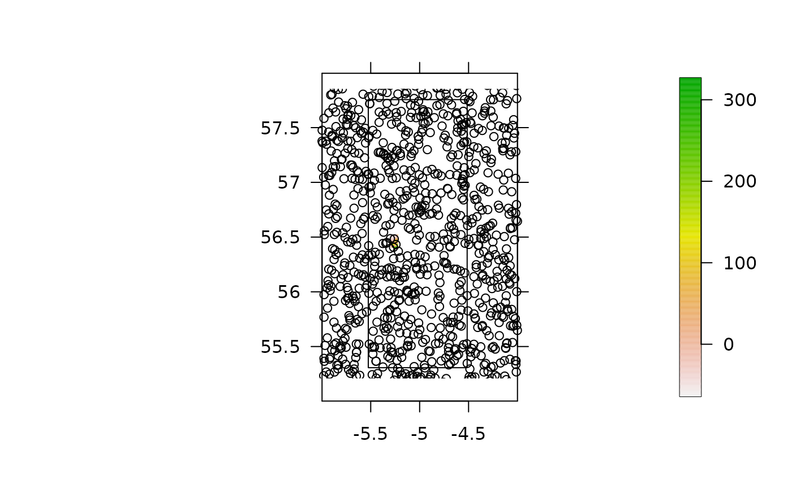
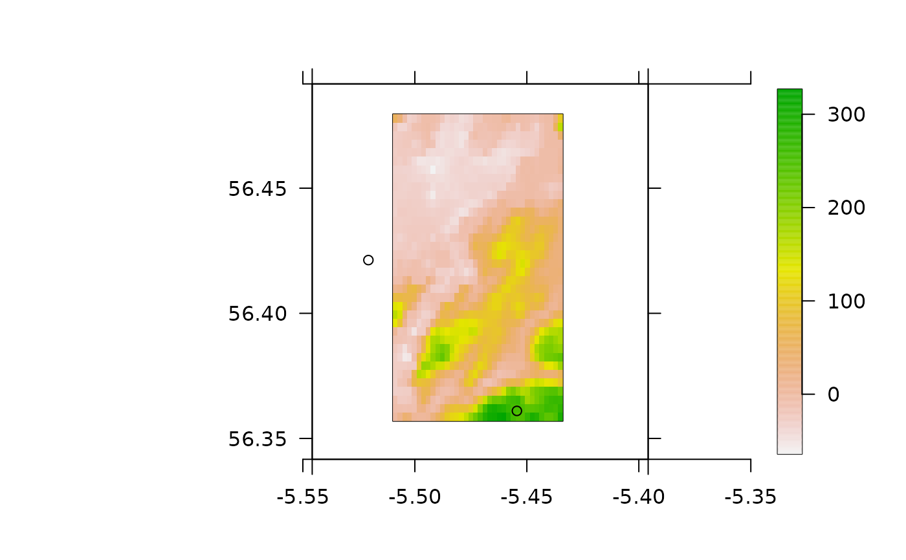
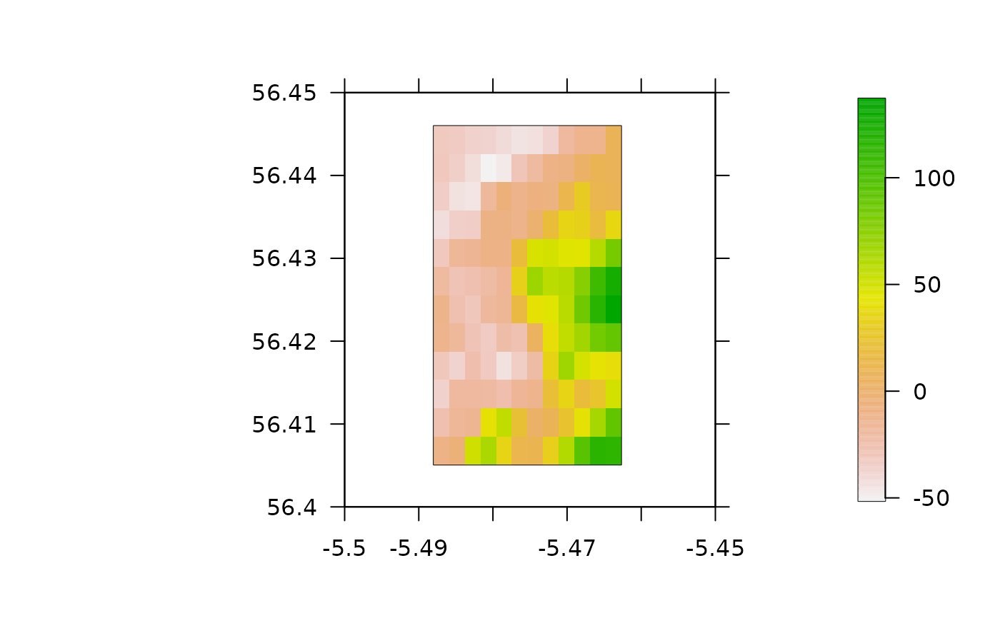
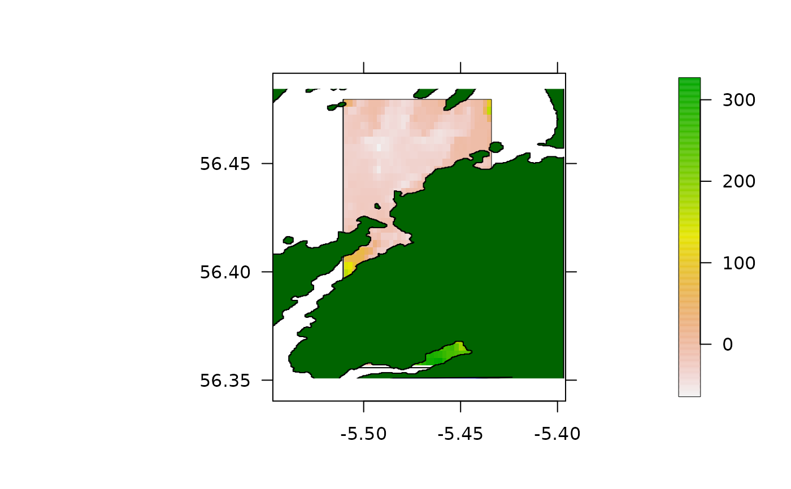
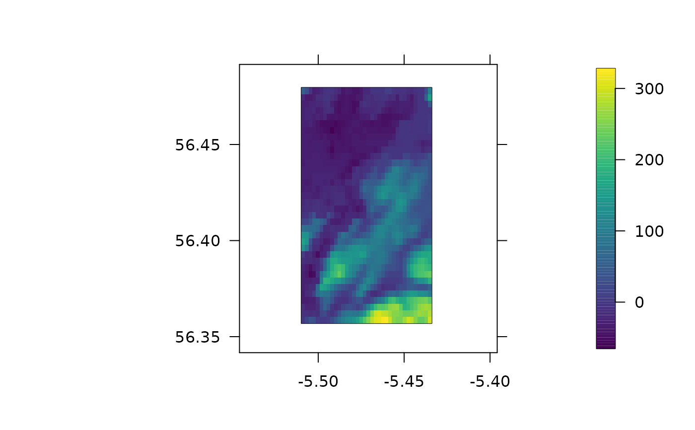

This function is used to produce pretty maps. This function proceeds by plotting a background map with pretty axes and then adds specifies spatial layers (namely, rasters, polygons, lines, paths and points) to this plot. Appropriate axis limits can be derived across all inputted spatial objects (unless specified) and all spatial layers can be cropped to this area (if requested).
pretty_map(
x = NULL,
add_rasters = NULL,
add_polys = NULL,
add_lines = NULL,
add_paths = NULL,
add_points = NULL,
add_additional = NULL,
crop_spatial = FALSE,
xlim = NULL,
ylim = NULL,
pretty_axis_args = list(side = 1:4, axis = list(list(), list(), list(labels = FALSE),
list(labels = FALSE)), control_sci_notation = list(magnitude = 16L, digits = 0)),
verbose = FALSE,
...
)(optional) An extent object (or, preferably, an object, such as a Raster* or Spatial* object that includes a coordinate reference system (CRS) and from which an extent object can be derived) that defines the area's boundaries. If provided, this is used to define the background plot, including the CRS (if possible) and axis limits (if unspecified). If x = NULL, then the CRS and axis limits are derived from the spatial objects defined via add_* lists (see below) and, if applicable, other function arguments, such as xlim and ylim.
(optional) A (optionally nested) named list of arguments, passed to add_sp_raster, to add raster(s) to the plot. Nested lists are supported for the addition of multiple layers. Each list must contain an 'x' element that defines the raster to be added to the plot.
(optional) A (optionally nested) named list of arguments, passed to add_sp_poly, to add polgyon(s) to the plot. The implementation of this argument follows that of add_rasters (above).
(optional) A (optionally nested) named list of arguments, passed to add_sp_line, to add lines(s) to the plot. The implementation of this argument follows that of add_rasters (above), but x and y coordinates can be passed as vectors, a matrix or as a Spatial* object.
(optional) A (optionally nested) named list of arguments, passed to add_sp_path, to add path(s) to the plot. The implementation of this argument follows that of add_rasters (above), but x and y coordinates can be passed as vectors, a matrix or as a Spatial* object.
(optional) A (optionally nested) named list of arguments, passed to add_sp_points, to add points(s) to the plot. The implementation of this argument follows that of add_rasters (above), but x and y coordinates can be passed as vectors, a matrix or as a Spatial* object.
(optional) A stand-alone function, to be executed after the background plot has been made and any specified spatial layers have been added to this, to customise the result.
A logical variable that defines whether or not to crop spatial data to lie within the axis limits, which are defined from (a) x, xlim and ylim, or from inputted spatial objects, depending on user inputs.
Axis control arguments. xlim and ylim control the axis limits, following the rules of the 'lim' argument in pretty_axis. Finer control can be achieved by passing additional arguments to this function as a named list via pretty_axis_args.
A logical variable that defines whether or not to print messages to the console to relay function progress. This can be useful with very large spatial datasets.
Additional arguments, passed to plot, which creates the background plot, such as xlab, ylab and main.
The function produces a background plot of an area with spatial layers added (if applicable). The named list of axis parameters computed by pretty_axis is also returned invisibly.
add_sp functions add spatial layers to a plot. pretty_map_from_file_raster is a wrapper for pretty_map that loads, plots and saves maps given a list of source files.
#### Example (1): Background only plots
pretty_map(dat_gebco)
#> 'x' is the only spatial information provided: plotting the background only.
#> prettyGraphics::pretty_map() CRS taken as: '+proj=longlat +datum=WGS84 +no_defs'.
pretty_map(dat_coast_around_oban)
#> 'x' is the only spatial information provided: plotting the background only.
#> prettyGraphics::pretty_map() CRS taken as: '+proj=longlat +datum=WGS84 +no_defs +ellps=WGS84 +towgs84=0,0,0'.
pretty_map(raster::extent(-10, 10, -10, 10))
#> 'x' is the only spatial information provided: plotting the background only.
#> prettyGraphics::pretty_map() CRS taken as: 'NA'.
#### Example (2): Single spatial layers
# Plot a bathymetric map
pretty_map(dat_gebco, add_rasters = list(x = dat_gebco))
#> prettyGraphics::pretty_map() CRS taken as: '+proj=longlat +datum=WGS84 +no_defs'.
# With a single spatial layer, this is an equivalent implementation
pretty_map(add_rasters = list(x = dat_gebco))
#> prettyGraphics::pretty_map() CRS taken as: '+proj=longlat +datum=WGS84 +no_defs'.

# With multiple layers, we can get the extent of the area automatically
x <- runif(1000, -6, -4)
y <- runif(1000, 55, 58)
pretty_map(add_rasters = list(x = dat_gebco),
add_points = list(x = x, y = y))
#> Spatial layers do not have identical CRS strings
#> prettyGraphics::pretty_map() CRS taken as: '+proj=longlat +datum=WGS84 +no_defs'.

# Or we can set it by specifying 'x' and, if necessary, crop other spatial data
# ... to this area
pretty_map(x = dat_gebco,
add_rasters = list(x = dat_gebco),
add_points = list(x = x, y = y),
crop_spatial = TRUE)
#> prettyGraphics::pretty_map() CRS taken as: '+proj=longlat +datum=WGS84 +no_defs'.

# Or via xlim and ylim arguments
pretty_map(x = dat_gebco,
add_rasters = list(x = dat_gebco),
add_points = list(x = x, y = y),
xlim = c(-5.5, -5.45), ylim = c(56.4, 56.45),
crop_spatial = TRUE)
#> prettyGraphics::pretty_map() CRS taken as: '+proj=longlat +datum=WGS84 +no_defs'.
#> Warning: The points layer could not be cropped and is not shown on the map. This can happen if none of the elements in the layer are within the map's extent. The error message in this case is aa follows. Error in .local(obj, ...): cannot derive coordinates from non-numeric matrix

#### Example (3): Use nested lists to inlclude multiple elements of the same type
## E.g., A map with a raster and multiple polygons, supplied as nested list
# Generate a random prism to include as a polygon
sim_prism <- sp::spsample(dat_coast_around_oban, n = 3, type = "random")
sim_prism <- sp::Polygon(sim_prism)
#> Warning: less than 4 coordinates in polygon
sim_prism <- sp::SpatialPolygons(list(sp::Polygons(list(sim_prism), ID = 1)))
# Make map
pretty_map(add_rasters = list(x = dat_gebco),
add_polys = list(list(x = dat_coast_around_oban, col = "darkgreen"),
list(x = sim_prism, col = "blue")))
#> Spatial layers do not have identical CRS strings
#> prettyGraphics::pretty_map() CRS taken as: '+proj=longlat +datum=WGS84 +no_defs'.

#### Example (4): Customise spatial layers via additional arguments to each list
pretty_map(dat_gebco,
add_rasters = list(x = dat_gebco, col = viridis::viridis(100)))
#> prettyGraphics::pretty_map() CRS taken as: '+proj=longlat +datum=WGS84 +no_defs'.

#### Example (4): Further customisation is possible via
# ... add_additional(), pretty_axis_args and ...
## add_additional()
add_titles <- function(){
mtext(side = 1, "x (UTM)", line = 2)
mtext(side = 2, "y (UTM)", line = -8)
}
pretty_map(dat_gebco, add_additional = add_titles)
#> 'x' is the only spatial information provided: plotting the background only.
#> prettyGraphics::pretty_map() CRS taken as: '+proj=longlat +datum=WGS84 +no_defs'.
## Similar (less tidy) implementation via ...
pretty_map(dat_gebco, xlab = "x (UTM)", ylab = "y (UTM)")
#> 'x' is the only spatial information provided: plotting the background only.
#> prettyGraphics::pretty_map() CRS taken as: '+proj=longlat +datum=WGS84 +no_defs'.
## Fine-tune axes
pretty_map(dat_gebco, pretty_axis_args = list(side = 1:4))
#> 'x' is the only spatial information provided: plotting the background only.
#> prettyGraphics::pretty_map() CRS taken as: '+proj=longlat +datum=WGS84 +no_defs'.